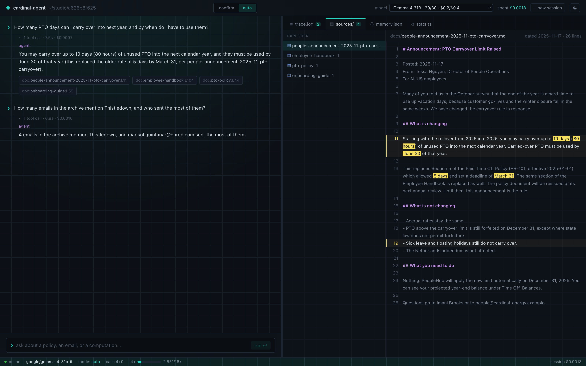

Local AI Lab · Product 1
Agent Studio
An AI agent on open-weight models with a harness we wrote from scratch: no agent framework, no tool-calling API, just a plain chat call and code we control. Watch every search, read, command and check as it happens, on your own machine.

Left: the conversation. Right: the live trace, with every model call (and how full its context is), every tool call and its result. Shown here on Gemma 4 31B.
How the harness works
The model only ever sees text and writes text. Everything that makes it reliable lives in the harness: what goes into each call, how replies are parsed, how mistakes are caught, and what is allowed to run.
Every answer points to its source
Click a source chip under an answer and the document opens in an editor-style viewer: the passages the agent found are marked in the margin, and the facts from the answer are highlighted in the text. Here the agent found the newer announcement that replaced the old 5-day rule.

Bake-off: same harness, four open models
Each model ran the same 30 tasks through the full agent: 20 questions about the company documents (some policies were replaced by later announcements) and 10 computations over a 26,000-email archive using a sandboxed terminal. Answers were scored by the course's own answer matcher. No model-specific prompts, only one per-model setting (the call tag).
| Model | Solved | Docs | Terminal | Cost | Nudges | Repairs | Format errors |
|---|---|---|---|---|---|---|---|
| Gemma 4 31B Google · google/gemma-4-31b-it | 29/30 | 20/20 | 9/10 | $0.039 | 1 | 0 | 4 |
| Nemotron 3 Super 120B NVIDIA · nvidia/nemotron-3-super-120b-a12b | 29/30 | 20/20 | 9/10 | $0.043 | 1 | 0 | 4 |
| gpt-oss-120b OpenAI · openai/gpt-oss-120b | 25/30 | 16/20 | 9/10 | $0.016 | 22 | 0 | 2 |
| Mistral Small 2603 Mistral · mistralai/mistral-small-2603 | 21/30 | 19/20 | 2/10 | $0.025 | 1 | 0 | 21 |
Nudges, repairs and format errors count how often the harness had to step in. Prices from OpenRouter on 2026-11-25. Results vary a little from run to run.
What the harness fixed along the way
A model that drops its own call tag
Nemotron's provider treats <tool_call> as a special token and cuts the reply to <to. The parser now also accepts <call>, set per model. Nemotron went from 0 to working.
Thinking out loud instead of acting
gpt-oss sometimes answers "We need to search the docs." and stops. A reply that names a tool but makes no call now gets one short reminder with an example call.
The same call written three times
Models often repeat one call with junk in between. A reply with different calls is still an error; the same call repeated is run once instead of failing the turn.
Answers that sound right
Before an answer goes out, every number and id in it is checked against what the tools returned. Only unclear cases go to a second model. Unsupported details go back to the agent once.
Planted instructions
Some documents tell AI agents to run commands. Results are marked as data, the user's request is repeated after each result, and a command copied from a document is blocked in auto mode: 0 of 7 planted commands ran.
Long conversations
Every call fits a fixed budget. Old tool results become one-line stubs first; a summary is written only if that is not enough. The user's own messages are never cut.
Run it locally
Needs macOS or Linux, uv, Node 18+, and an OpenRouter key (a typical question costs well under a cent; the launcher sets a $2 cap). The terminal tool runs commands in an OS sandbox: sandbox-exec on macOS, bubblewrap on Linux.
git clone https://github.com/shivamkalakaar/local-ai-lab-agents.git cd local-ai-lab-agents/products/agent-studio export OPENROUTER_API_KEY=sk-or-... ./start.sh # opens http://localhost:3000 STUDIO_MODEL=google/gemma-4-31b-it ./start.sh # pick a model
Built on
The harness began as the author's solution to Stanford CS329Z (Engineering AI Agents) Assignment 1, built on its MIT-licensed starter code by Michael Ryan and the CS329Z staff, and on patterns studied in the source of Pi, Codex CLI, Gemini CLI, OpenHands, mini-swe-agent and AgentDojo. The email archive is a slice of the public Enron corpus (Klimt and Yang, 2004); the company documents are fictional.